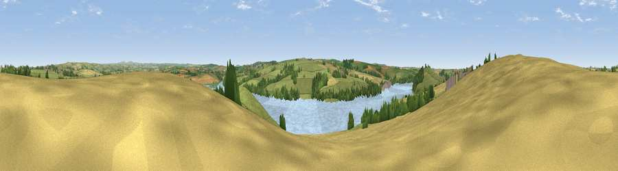

Viewpoint near Pityme
#21802 in England · top 45% of its area beats it · near PitymeThe view, rendered

A 360° render of this exact spot computed from the terrain model, tree cover and land cover — summer colours, afternoon light, calibrated against photographs of famous viewpoints. Real trees, hedges and buildings will differ in detail.
The panorama
Grey silhouette: terrain skyline in each direction (720 bearings, Earth curvature and refraction included). Dashed green: skyline with trees (+15 m) and buildings (+8 m) as obstacles. Blue strip: how far the ground is visible on each bearing.
Where the view opens
Wedge length = distance to the farthest visible ground on that bearing (vegetation-aware). Rings at 10, 25 and 50 km.
What fills the view
46% grassland · 27% cropland · 17% water · 8% woodland · 1% built-up · 1% wetland
Angular shares of the visible panorama (visual magnitude), not map area. Landscape diversity 0.57 (0–1 Shannon).
Key numbers
More beautiful places nearby
The staircase of upgrades: each row has a higher view potential than everything closer. Driving times are estimates from straight-line distance, calibrated against real road routing — check an actual route before setting out.
| Place | Direction | Drive | Score |
|---|---|---|---|
| Viewpoint near Rock | WSW · 2 km | ~5 min | 56.5 |
| Viewpoint near Whitecross | S · 2 km | ~6 min | 61.6 |
| Viewpoint near St Issey | SSW · 4 km | ~8 min | 70.3 |
| Viewpoint near Port Isaac | NE · 5 km | ~11 min | 77.8 |
| Viewpoint near Port Isaac | NE · 8 km | ~17 min | 79.7 |
| Viewpoint near Roche | S · 17 km | ~30 min | 80.9 |
| Viewpoint near Stenalees | SSE · 18 km | ~31 min | 88.0 |
| Viewpoint near Crackington Haven | NE · 25 km | ~41 min | 88.1 |
50.53901, -4.87502 · source: screening · position refined by local search. Computed location — check access rights before visiting.